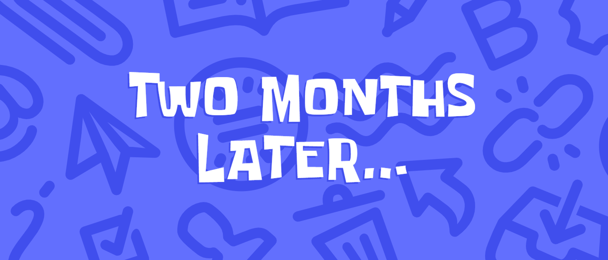

object elements, too (used for embedding the SVGs so separate images can be combined together).
Discord as a service has solved various practical hurdles for running and participating in communities with mixed media, which has led to it becoming a popular, if controversial, alternative to open web means. It can be great until it isn't.
Thanks to its attractiveness to scam campaigns the onboarding stringency and bot detection sensitivity has grown over time, where even as early as registration these days users can be gated for more verification without any out-of-the-ordinary actions taken. It's not surprising algorithms dealing with broad problems make mistakes, though particularly for long-term users how a service handles them is important.
Since while Discord is largely known for chit-chat it's also increasingly supplanted standard web platforms as a sole replacement for user support, discussions and collaboration for a wide variety of communities, due to its convenience and along with cost largely being Somebody Else's Problem (outside of freemium perks).
Multiple dedicated forums—and even some IRC channels—I've either found useful or been part of have migrated exclusively to Discord, for better or worse. Some having time-limited, restricted Discord invite links that have long since expired. With such consolidation tripping the voodoo of heuristics with an established account, especially with ongoing projects, becomes a tad more impactful than just not being able to post I've hired this cat to stare at you memes.
Contents
How it started
While receiving help from a user about a nodes setup in a 3D file (consisting of cubes *gasp*), over the course of a couple hours and within a community I've been part of for years, I asked if I could direct message them the file for a quick look-over, as my setup was having differing results. 'Sure', they said.
Wow, Big Mistake, apparently. Despite this being commonplace, somewhere between me trying to DM them and add them as a friend—which they also agreed to—Discord triggered some false positive.
When the friend request button had been clicked a captcha was presented (the first time encountering one on Discord in eight years) and immediately after completing it my account was restricted and a phone number prompt presented to regain access.
Great. Then subsequently upon entering a number I've had for several years it was rejected by Discord. Great.
Pictured: user who clicked a buttonHow it's going
On the same page Discord presents a Think you're seeing this by mistake? support link. Surely given the context I was able to provide it would be clear some error on their end had occured [narrator: they were not in fact that sure].
After a couple days of not knowing if the form had actually been received in came a polite if generic sounding reply asking for confirmation of something in the form. Following my response they escalated the ticket...
More jaded readers might see where this was going but it hasn't been looking spectacularly promising, with no further response after more than two months.
Reading online one can perhaps unsurprisingly find various users in similar scenarios who've experienced dead ends to escalated tickets. Though sprinkled in more obscure comments are some who've been blessed by marginally better RNG support.
In contrast Discord appear to if nothing else pay more attention to bug reports, with a UX ticket I submitted last year receiving follow-ups and a reproducibility confirmation (even if it ultimately seemed like a wontfix). Years prior they also had a dedicated official community chat for bug reports which was rather large and active.
So I figured I'd write about it. At least some may find the SVGs interesting (and/or be able to avoid similar pitfalls). By some chance maybe even get an official response, being able to observe that I am indeed a Real Human Being.
So what may have triggered this?
In trying to sleuth out what happened I found one post suggesting a verification lockout can occur when attempting to add multiple users as friends in a short timeframe.
It was this that made me piece together what may have been an unintended side-effect of managing Javascript.

In the browser I use Discord for I keep Javascript enabled only for domains trusted/frequented. When the captcha was presented after the friend request button was clicked the domain it loaded from wasn't in the allow list which caused the captcha to be blank the first few times, as I first had to permit the captcha domain then some further domains it loaded scripts from, each time necessitating a page reload.
By the time all the Javascript was allowed and the captcha had finally loaded I'd probably clicked the button ~3 times while checking if it had rendered yet, though I hadn't given it any thought at the time.
It's also the first time in several years I've had to change any permissions while using Discord.
It was immediately following the completion of the captcha the lockout occurred—and talk about an odd way to go about it: would not having matched the pairs of lions prevented this all from happening? UX mysteries for the ages.
So potentially their system saw I was clicking the (same) friend request button multiple times in a short timespan and flagged the account. Delightful. This is just a best guess as there hasn't been any further response.
Verification gotchas
In looking at their documentation Discord uses a third party phone verification API (which at least as of some years ago was Twilio, per a Discord developer comment) and screen for prepaid numbers (among others like VoIP, eSIM, landline).
I'd imagine a reason for this is because, at least in an ever decreasing minority of places, ID isn't required to register a prepaid number (likely more attractive for so-called burner numbers). This isn't the case in my situation however, nor have any environment factors changed in almost a year which Discord would be able to see.
Where things get more into the weeds are the gotchas with their verification system that themselves can trigger false positive permabans that are entirely out of users' hands. This wasn't the rabbit hole I was anticipating looking into for what some describe as glorified IRC but here we are.
-
If a number has been previously attached to a banned account Discord is said to auto ban whichever account that same number is subsequently attached to, as they store both numbers from such banned accounts and the last used number of all accounts (or perhaps a hash of it) even if it's removed.
This is an issue as if one were to register any type of new number with a carrier that happens to be recycled (ie: a phone number reissued by the carrier after a period of inactivity) you're rolling the dice with your account given you have no insight into a number's history.
For context, I'm grandfathered into a more ideal phone plan, aren't planning on switching and have had the number for IIRC about long as using Discord. Relevant as it means my existing number wouldn't be affected from the above.
-
Multiple users have reported being unable to detach a number from their account once used for verification (reporting it distinct from the known cooldown).
It seems by an esoteric metric accounts can sometimes be flagged by Discord to always require the same number. So if one were to register a new number just for verification purposes it'd be impractical to continue to pay for an entirely separate number just for Discord.
-
Even if one managed to temporarily register a number that by chance didn't have prior issues, was arbitrarily accepted and without a dettachment restriction, once it had lapsed and become recycled if a different user attached that number and became banned it's plausible based on the above that Discord may retroactively ban/flag the initial account it was attached to, naively considering them the same person.
One user I spoke with outside Discord told me they rejected a number they'd had for over 15 years, leading them to abandon the service entirely. Yeah, they weren't super happy about that.
While a user elsewhere reported Discord support suggesting trying someone else's phone number—which itself has obvious problems (no direct control and prevents such a person from using it themselves if point #2 applies). This really makes one wonder how limited offical support privileges are if such things are being suggested as workarounds within their own system.
From Discord's perspective I expect they're not overly concerned about losing users here and there. One of the less accounted for factors though is typically communities are disproportionately supported by far fewer users.
So you have the case (and not just on Discord) where a small group are contributing anywhere from a significant to all the support/core contributions/moderation, etc for a wider community. I'm sure some reading this would be able to think of situations that have a bus factor of even just one. With the indiscriminate official support this has a gamut of obvious to less quantifiable knock-on effects for such users who face issues with their account or can't even create a new one due to verification gating, which is context lost on a large platform.
Given the scenario one would think the issue could be reasonably resolved, though just reaching anyone who can help with certain types of tickets appears to be a complete gamble.
While if this were a regular community site I'd have been able to get in touch with someone familiar with the community, if not the webmaster themselves. Y'know, like normal. Which is relevant when the outcome has been at times wholesale migrations of previously self-administered sites, absorbing the users helping shape and support them (and in turn Discord).
For as much as Discord gets right there should at least be a better process for handling such cases for the rare occasions when it counts.
If anyone at Discord does happen to see this and would like to resolve this the ticket is #46824891. I'd certainly appreciate my account being back to normal than in limbo.